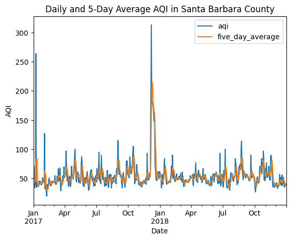
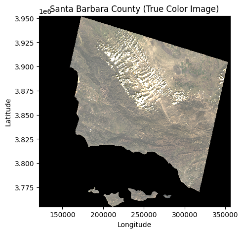
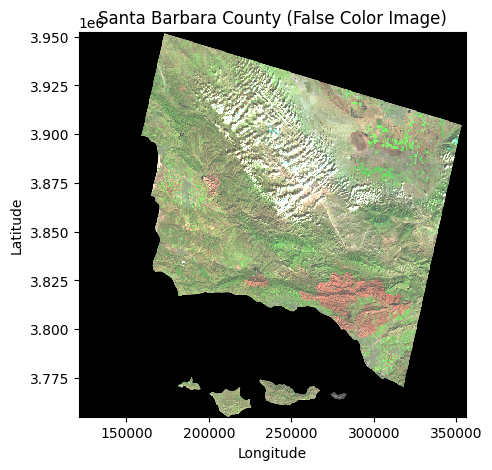
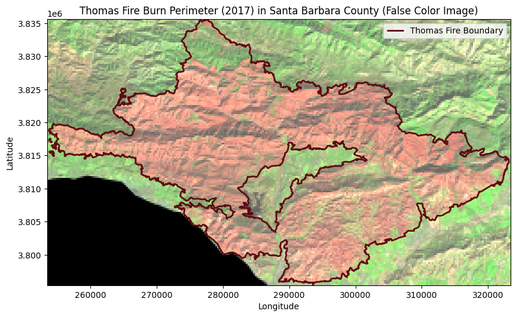

# Import Libraries
import pandas as pd
import numpy as np
import matplotlib.pyplot as plt
import os
import geopandas as gpd
import rioxarray as rioxr
import xarray as xr
import matplotlib.pyplot as pltIntroductory Data and Geospatial Analysis of the Santa Barbara Thomas Fire
Import Libraries
Importing all relevant libraries - for all excersizes in this blog post.
Air Quality Index Analysis
# Read in data
aqi_17 = pd.read_csv('https://aqs.epa.gov/aqsweb/airdata/daily_aqi_by_county_2017.zip', compression = 'zip')
aqi_18 = pd.read_csv('https://aqs.epa.gov/aqsweb/airdata/daily_aqi_by_county_2018.zip', compression = 'zip')
# Concatenate both dataframes
aqi = pd.concat([aqi_17, aqi_18])
# Simplify column names
aqi.columns = (aqi.columns
.str.lower()
.str.replace(' ','_')
)
# Create filter Santa Barbara df with dropped columns
aqi_sb = aqi[aqi['county_name'] == 'Santa Barbara']
aqi_sb = aqi_sb.drop(columns = ['state_name','county_name','state_code','county_code'], axis = 1)
# Change 'date' to datetime and set to index
aqi_sb.date = pd.to_datetime(aqi_sb['date'])
aqi_sb = aqi_sb.set_index('date')
# Calculate AQI rolling average over 5 days
rolling_average = aqi_sb['aqi'].rolling('5D').mean()
# Create column with new variable 'rolling_variable'
aqi_sb['five_day_average'] = rolling_average
# Create plot with daily AQI and 5-day averages
daily_aqi_plot = aqi_sb[['aqi','five_day_average']].plot(title = 'Daily and 5-Day Average AQI in Santa Barbara County',
xlabel = 'Date',
ylabel = 'AQI')
Fire perimeter data retrieval and selection
About
The purpose of this notebook is to explore, clean, and analyze the California fire perimeter shapefile, published by CAL FIRE. This is to obtain the Thomas Fire perimeter boundary for use in “hwk4-task2-false-color-MORAES”.
Highlights: Working with this dataset was illuminating in looking at how state agencies store fire data and the aspects state agecies deem important to record, the fact that there is a start and end date to the observations, as well as learning how to store updated shape files. I consider the practice in setting up an entirely new project from scratch to be quite valuable, along with the process of independantly learning to access data for a continous workflow, important.
About the data: This dataset was published and maintained by CAL FIRE, but accessed through Data.gov. The statewide fire history geospatial dataset is updated annually from the previous fire season, during spring, from units across the state and cooperating agencies. The first version was released in May 2015 - according the the CalFire site.
Set-Up
Import Data
# Display all columns when looking at dataframes
pd.set_option("display.max.columns", None)# Create data filepath
fp = os.path.join('data','California_Fire_Perimeters_(all).shp')
# Create dataframe for CA fire perimeter shapefile
ca_fire_perimeter = gpd.read_file(fp)Initial Data Exploration
In this section we will take a preliminary look at the imported fire perimeter data - in order to understand how to extract the Thomas Fire perimenter data.
# Check dataframe head
ca_fire_perimeter.head(3)| YEAR_ | STATE | AGENCY | UNIT_ID | FIRE_NAME | INC_NUM | ALARM_DATE | CONT_DATE | CAUSE | C_METHOD | OBJECTIVE | GIS_ACRES | COMMENTS | COMPLEX_NA | IRWINID | FIRE_NUM | COMPLEX_ID | DECADES | geometry | |
|---|---|---|---|---|---|---|---|---|---|---|---|---|---|---|---|---|---|---|---|
| 0 | 2023 | CA | CDF | SKU | WHITWORTH | 00004808 | 2023-06-17 | 2023-06-17 | 5 | 1 | 1 | 5.72913 | NaN | NaN | {7985848C-0AC2-4BA4-8F0E-29F778652E61} | NaN | NaN | 2020 | POLYGON ((-13682443.000 5091132.739, -13682445... |
| 1 | 2023 | CA | LRA | BTU | KAISER | 00010225 | 2023-06-02 | 2023-06-02 | 5 | 1 | 1 | 13.60240 | NaN | NaN | {43EBCC88-B3AC-48EB-8EF5-417FE0939CCF} | NaN | NaN | 2020 | POLYGON ((-13576727.142 4841226.161, -13576726... |
| 2 | 2023 | CA | CDF | AEU | JACKSON | 00017640 | 2023-07-01 | 2023-07-02 | 2 | 1 | 1 | 27.81450 | NaN | NaN | {B64E1355-BF1D-441A-95D0-BC1FBB93483B} | NaN | NaN | 2020 | POLYGON ((-13459243.000 4621236.000, -13458968... |
# Check CRS - and type
ca_fire_perimeter.crs<Projected CRS: EPSG:3857>
Name: WGS 84 / Pseudo-Mercator
Axis Info [cartesian]:
- X[east]: Easting (metre)
- Y[north]: Northing (metre)
Area of Use:
- name: World between 85.06°S and 85.06°N.
- bounds: (-180.0, -85.06, 180.0, 85.06)
Coordinate Operation:
- name: Popular Visualisation Pseudo-Mercator
- method: Popular Visualisation Pseudo Mercator
Datum: World Geodetic System 1984 ensemble
- Ellipsoid: WGS 84
- Prime Meridian: GreenwichAfter the exploration of the California perimeter shape file, imported into this notebook, I see that is has 22,260 fire perimeter observations with columns for varied descriptive markers including: year, fire name, alarm date, and geometery. I observe that some of the column data types int64 and float64, however, I may want to change the date columns into datetime objects for manipulation. The CRS of this shapefile is a projected coordinate reference system, EPSG: 3857 and is a popular crs for web mapping services.
Clean Data
Next, I will clean the data for easier data manipulation.
# Simplify column names by replacing spaces and no capitilization
ca_fire_perimeter.columns = (ca_fire_perimeter.columns
.str.lower()
.str.replace(' ','_')
)
# Make dates into DateTime object
ca_fire_perimeter.alarm_date = pd.to_datetime(ca_fire_perimeter.alarm_date)
ca_fire_perimeter.cont_date = pd.to_datetime(ca_fire_perimeter.cont_date)Thomas Fire Boundary
Here, I will select for the Thomas Fire Boundary (2017), and save it as a new geospatial file.
# Select Thomas Fire in 2017
thomas_fire_boundary = ca_fire_perimeter[(ca_fire_perimeter['alarm_date'] > '2016-12-31') &
(ca_fire_perimeter['alarm_date'] < '2018-01-01') &
(ca_fire_perimeter['fire_name'] == 'THOMAS')]# View dataframe
thomas_fire_boundary| year_ | state | agency | unit_id | fire_name | inc_num | alarm_date | cont_date | cause | c_method | objective | gis_acres | comments | complex_na | irwinid | fire_num | complex_id | decades | geometry | |
|---|---|---|---|---|---|---|---|---|---|---|---|---|---|---|---|---|---|---|---|
| 2654 | 2017 | CA | USF | VNC | THOMAS | 00003583 | 2017-12-04 | 2018-01-12 | 9 | 7 | 1 | 281791.0 | CONT_DATE based on Inciweb | NaN | NaN | NaN | NaN | 2010 | MULTIPOLYGON (((-13316089.016 4088553.040, -13... |
# Save dataframe as geospatial file in /data folder
thomas_fire_boundary.to_file('data/thomas_fire_boundary.geojson', driver = 'GeoJSON')I chose to convert the alarm_date and cont_date variables into DateTime objects, and wanted them to retain that data type. As I would need to convert DateTime objects back into strings to save as shapefile, I chose to store the new data frame as a GeoJSON file. I have saved the data in the ‘data/’ folder common to this project.
False and True Color Images
In a new notebook, I have created a path to the Thomas Fire perimeter data saved in the previous step.
Import Data
# Set up file paths
land_fp = os.path.join('data', 'landsat8-2018-01-26-sb-simplified.nc')
thomas_fp = os.path.join('data', 'thomas_fire_boundary.geojson')
# Import landsat data
landsat = rioxr.open_rasterio(land_fp)
# Import Thomas Fire perimeter
thomas_fire_perimeter = gpd.read_file(thomas_fp)Explore Data
In this section we will take a preliminary look at the imported landsat data - in order to understand how to visualize it with respect to the Thomas Fire perimenter data.
# View landsat
landsat<xarray.Dataset>
Dimensions: (y: 731, x: 870, band: 1)
Coordinates:
* y (y) float64 3.952e+06 3.952e+06 ... 3.756e+06 3.755e+06
* x (x) float64 1.213e+05 1.216e+05 ... 3.557e+05 3.559e+05
* band (band) int64 1
spatial_ref int64 0
Data variables:
red (band, y, x) float64 ...
green (band, y, x) float64 ...
blue (band, y, x) float64 ...
nir08 (band, y, x) float64 ...
swir22 (band, y, x) float64 ...# View landsat sizes
landsat.sizesFrozen({'y': 731, 'x': 870, 'band': 1})# Landsat CRS
landsat.rio.crsCRS.from_epsg(32611)Through the exploration of the “landsat” xarray.Dataset, I have been able to notice the shape (5, 1, 731, 870) and the dimensions (x coordinates, y coordinates and 1 band). The data’s variables has 5 groups of information - red, green, blue, near infrared 08, and short wave infrared 22. The crs of the dataset is ESPG: 32611.
Clean Data
In this section, we will remove the band dimension of the Landsat data (as there is only 1).
# Drop the band dimension of the data
landsat = landsat.squeeze()
# Remove coordinates associated to band dimension
landsat = landsat.drop_vars('band')
# Check new landsat dataset
print(landsat.dims, landsat.coords)Frozen({'y': 731, 'x': 870}) Coordinates:
* y (y) float64 3.952e+06 3.952e+06 ... 3.756e+06 3.755e+06
* x (x) float64 1.213e+05 1.216e+05 ... 3.557e+05 3.559e+05
spatial_ref int64 0Visualize Data
In this section, I will make some preliminary visuals of the landsat data. I will be making true and false color images.
True Color Image
# Adjust the scale for plotting the bands for a true color image
fig, ax = plt.subplots(figsize = (5, 5)) # Set up plot
(landsat[['red', 'green', 'blue']]).to_array().plot.imshow(robust = True) # Plot Landsat True Color image
ax.set_title("Santa Barbara County (True Color Image)") # Add title
# Set axis labels
ax.set_xlabel("Longitude")
ax.set_ylabel("Latitude")
# Show map
plt.show()
False Color Image
# Plot false color image
fig, ax = plt.subplots(figsize = (5, 5)) # Set up plot
(landsat[['swir22', 'nir08', 'red']]).to_array().plot.imshow(robust = True) # Plot landsat false color image
# Add title
ax.set_title("Santa Barbara County (False Color Image)")
# Set axis labels
ax.set_xlabel("Longitude")
ax.set_ylabel("Latitude")
# Show map
plt.show()
Notice how, in the false color image, the area approximating the Thomas Fires are a orange-red color compared to the rest of the green in the county.
Map
In this final section, we will create maps of Santa Barbara overlayed with the Thomas Fire perimeter data (that we obtained in the fire perimeter notebook).
# Set CRS of landsat and thomas_fire_perimeter equivalent
thomas_fire_perimeter = thomas_fire_perimeter.to_crs(crs = landsat.rio.crs)
# Test if equivalencies true
assert thomas_fire_perimeter.crs == landsat.rio.crs# Create bounding box for fire perimeters
landsat_bounded = landsat.rio.clip_box(*thomas_fire_perimeter.total_bounds)
# Clip map to fire perimeter bounds
fig, ax = plt.subplots(figsize = (10, 10)) # Setup plot
landsat_bounded[['swir22', 'nir08', 'red']].to_array().plot.imshow(ax = ax, robust = True) # Plot the landsat bands
thomas_fire_perimeter.boundary.plot(ax = ax, edgecolor = '#5F0A11', linewidth = 2, label="Thomas Fire Boundary") # Plot the thomas fire data on same plot
# Add title
ax.set_title("Thomas Fire Burn Perimeter (2017) in Santa Barbara County (False Color Image)")
# Set legend within map borders
ax.legend()
# Set axis labels
ax.set_xlabel("Longitude")
ax.set_ylabel("Latitude")
# Set legend
ax.legend()
# Show map
plt.show()/opt/python/3.7.13/lib/python3.7/site-packages/geopandas/plotting.py:51: ShapelyDeprecationWarning: The 'type' attribute is deprecated, and will be removed in the future. You can use the 'geom_type' attribute instead.
if geom is not None and geom.type.startswith(prefix) and not geom.is_empty:
Map Description
The 2 maps in the “Map” portion of this notebook, shows Santa Barbara County with fase color imagery - which include short wave infrared, near infrared, and red bands. The 2017 Thomas Fire burn perimeter is outlined in dark red, on top of this false image map, and it also appears red inside the perimeter (because of the false color imaging). This is due to the fact that it highly reflects shortwave infared. The Thomas Fire started 12/4/2017 and was contained on 1/12/2018. This imagery is therefore taken shortly after the fire was contained, on 1/26/2018.
References
- AQI Data : AirNow.gov, U.S. EPA. (n.d.-b). Aqi Basics. AQI Basics | AirNow.gov. https://www.airnow.gov/aqi/aqi-basics/
- Thomas Fire Perimeter: Publisher CAL FIRE. (2024, May 14). State of California - california fire perimeters (all). Catalog. https://catalog.data.gov/dataset/california-fire-perimeters-all-b3436
- Assignment Reference and Cleaned Landsat Data Access : Galaz-Garcia, C. (n.d.). Assignment 4. assignment4 – EDS 220 - Working with Environmental Datasets. https://meds-eds-220.github.io/MEDS-eds-220-course/assignments/assignment4.html
- Landsat Data: Microsoft Planetary Computer. Planetary Computer. (2018, January 12). https://planetarycomputer.microsoft.com/dataset/landsat-c2-l2
Citation
BibTeX citation:
@online{moraes2024,
author = {Moraes, Naomi},
title = {Thomas {Fire} {Analysis}},
date = {2024-10-18},
url = {https://nmoraescommit.github.io/blog/2024-12-01-thomas-fire-sb},
langid = {en}
}
For attribution, please cite this work as:
Moraes, Naomi. 2024. “Thomas Fire Analysis.” October 18,
2024. https://nmoraescommit.github.io/blog/2024-12-01-thomas-fire-sb.